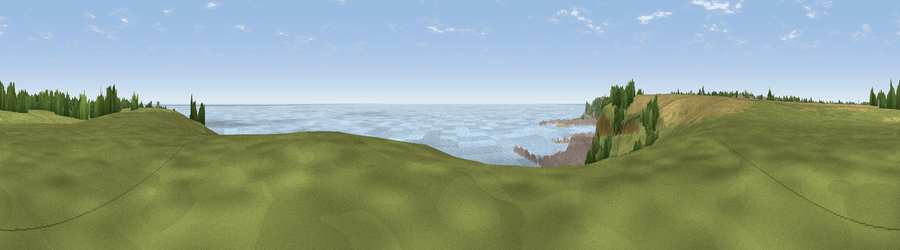

Viewpoint near St. Margaret's at Cliffe
#4254 in England · top 12% of its area beats it · near St. Margaret's at CliffeThe view, rendered

A 360° render of this exact spot computed from the terrain model, tree cover and land cover — summer colours, afternoon light, calibrated against photographs of famous viewpoints. Real trees, hedges and buildings will differ in detail.
The panorama
Grey silhouette: terrain skyline in each direction (720 bearings, Earth curvature and refraction included). Dashed green: skyline with trees (+15 m) and buildings (+8 m) as obstacles. Blue strip: how far the ground is visible on each bearing.
Where the view opens
Wedge length = distance to the farthest visible ground on that bearing (vegetation-aware). Rings at 10, 25 and 50 km.
What fills the view
58% water · 25% grassland · 10% cropland · 4% woodland · 3% built-up
Angular shares of the visible panorama (visual magnitude), not map area. Landscape diversity 0.50 (0–1 Shannon).
Key numbers
More beautiful places nearby
The staircase of upgrades: each row has a higher view potential than everything closer. Driving times are estimates from straight-line distance, calibrated against real road routing — check an actual route before setting out.
| Place | Direction | Drive | Score |
|---|---|---|---|
| Viewpoint near St. Margaret's at Cliffe | ENE · 1 km | ~2 min | 72.4 |
| Viewpoint near Dover | WSW · 2 km | ~6 min | 75.7 |
| Viewpoint near Dover | WSW · 5 km | ~10 min | 76.4 |
| Viewpoint near Capel-le-Ferne | WSW · 7 km | ~15 min | 77.1 |
| Viewpoint near Capel-le-Ferne | WSW · 8 km | ~16 min | 77.9 |
| Viewpoint near Capel-le-Ferne | WSW · 12 km | ~22 min | 80.2 |
| Viewpoint near Willingdon | WSW · 87 km | ~111 min | 83.4 |
| Wilmington Hill | WSW · 89 km | ~113 min | 85.4 |
51.13564, 1.35454 · source: screening · position refined by local search. Computed location — check access rights before visiting.